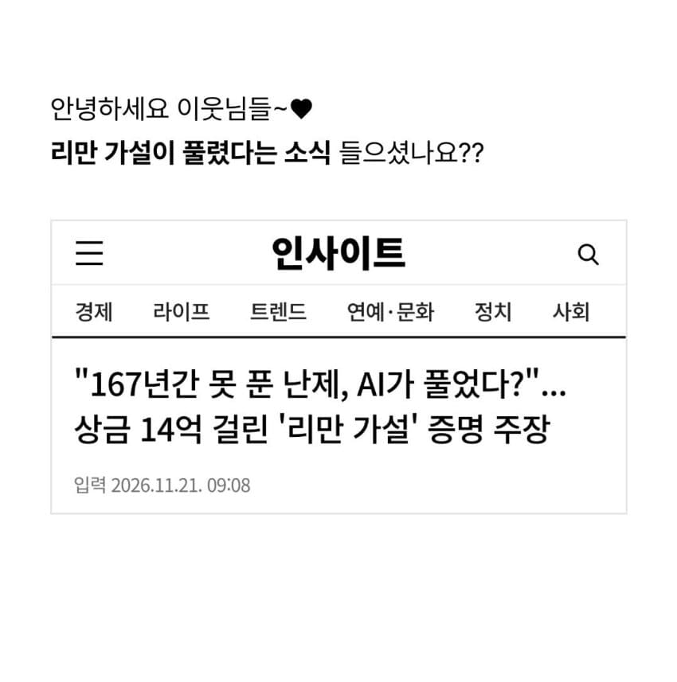
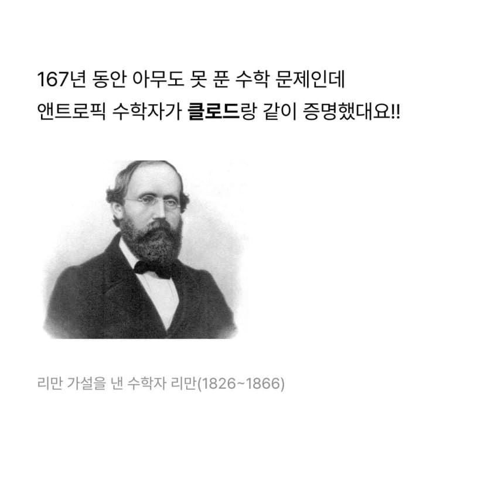
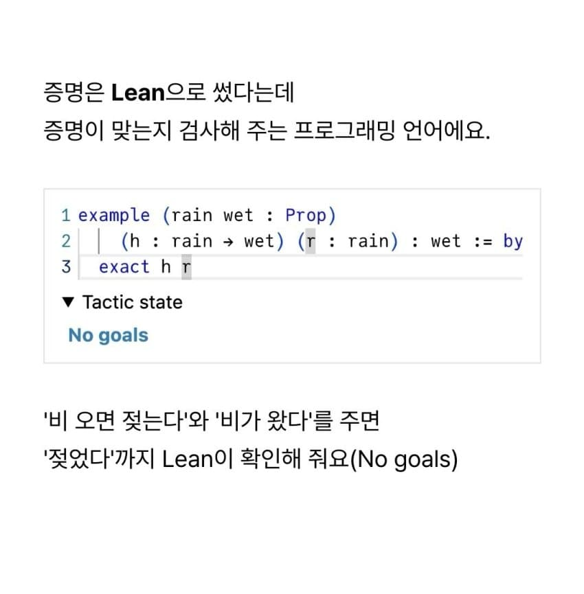
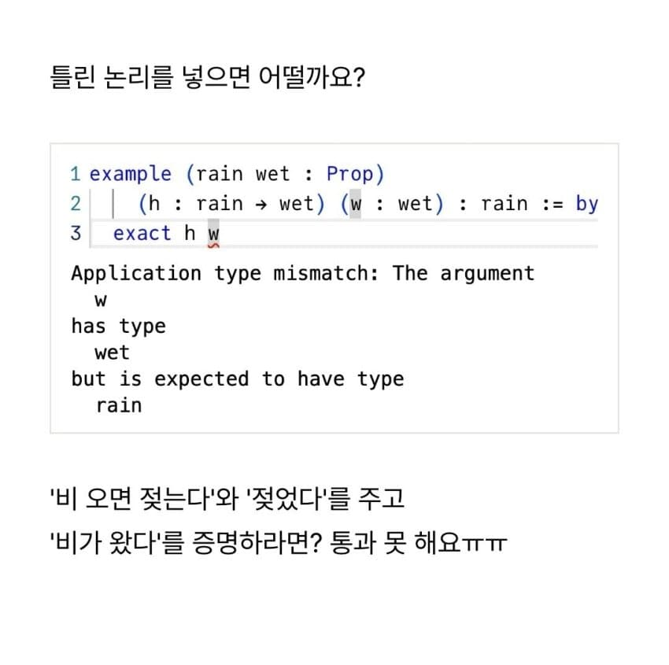
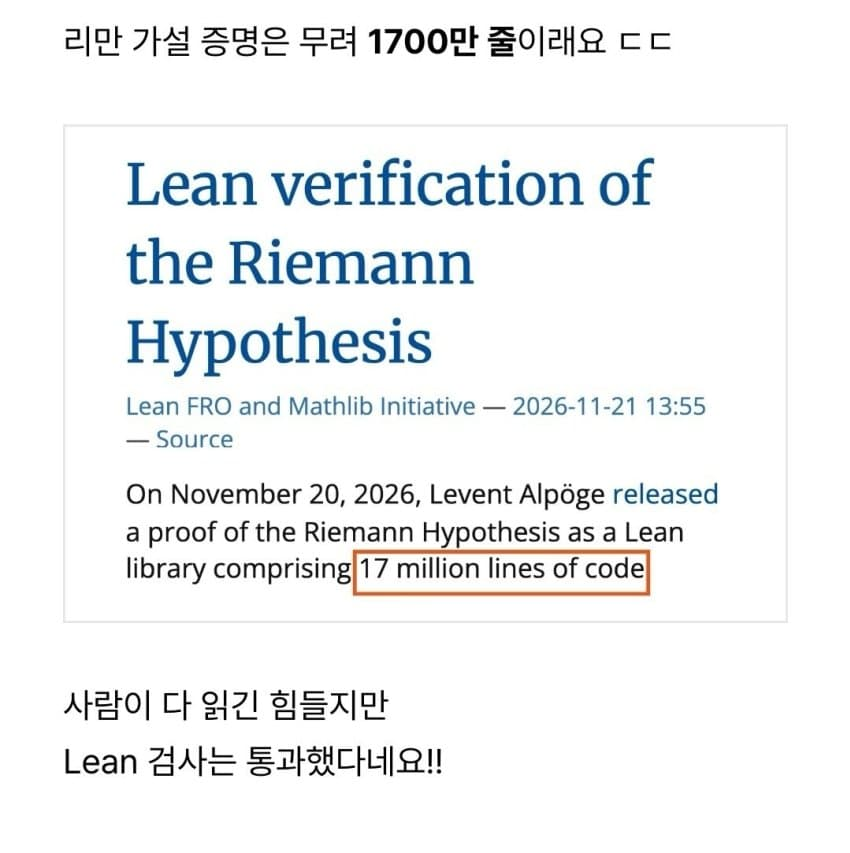
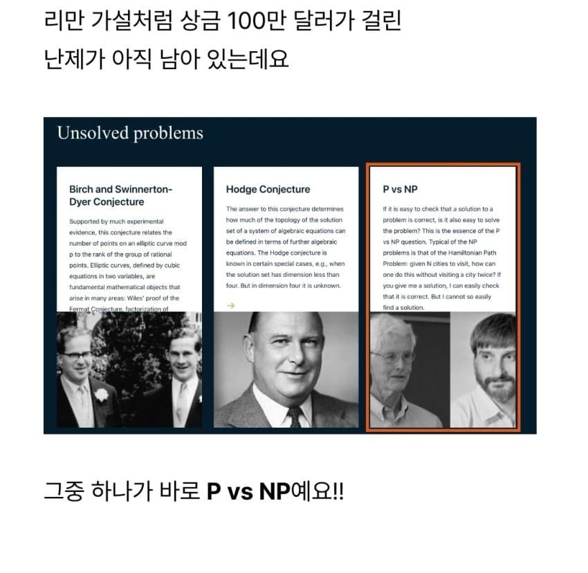
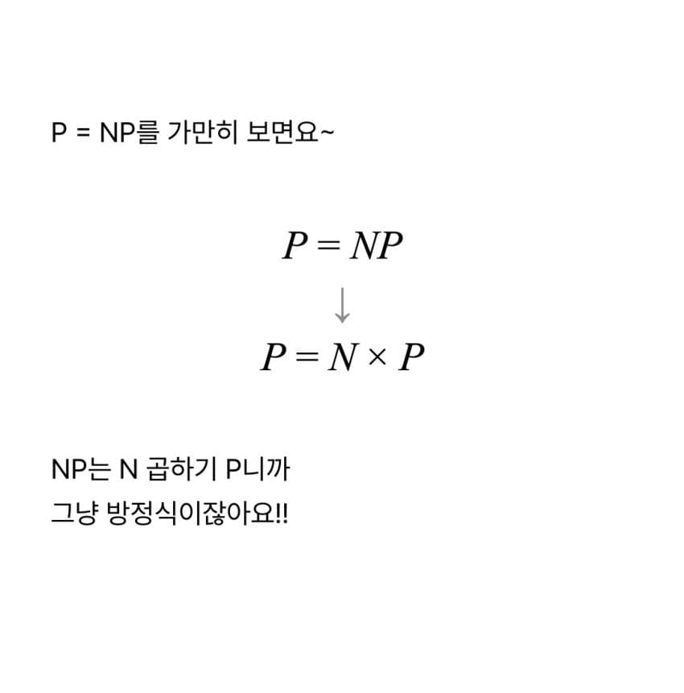
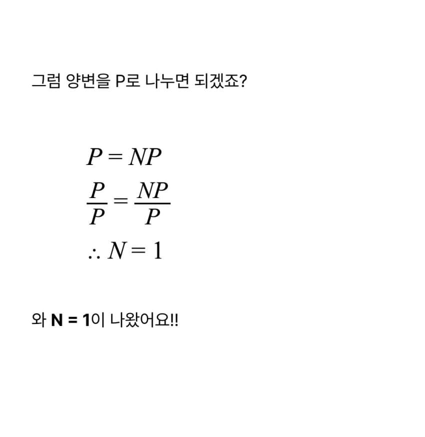
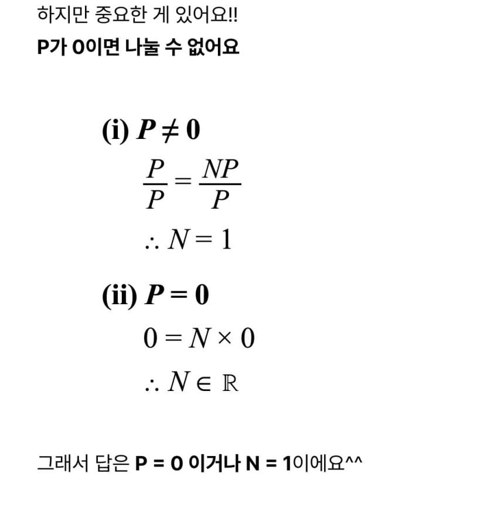
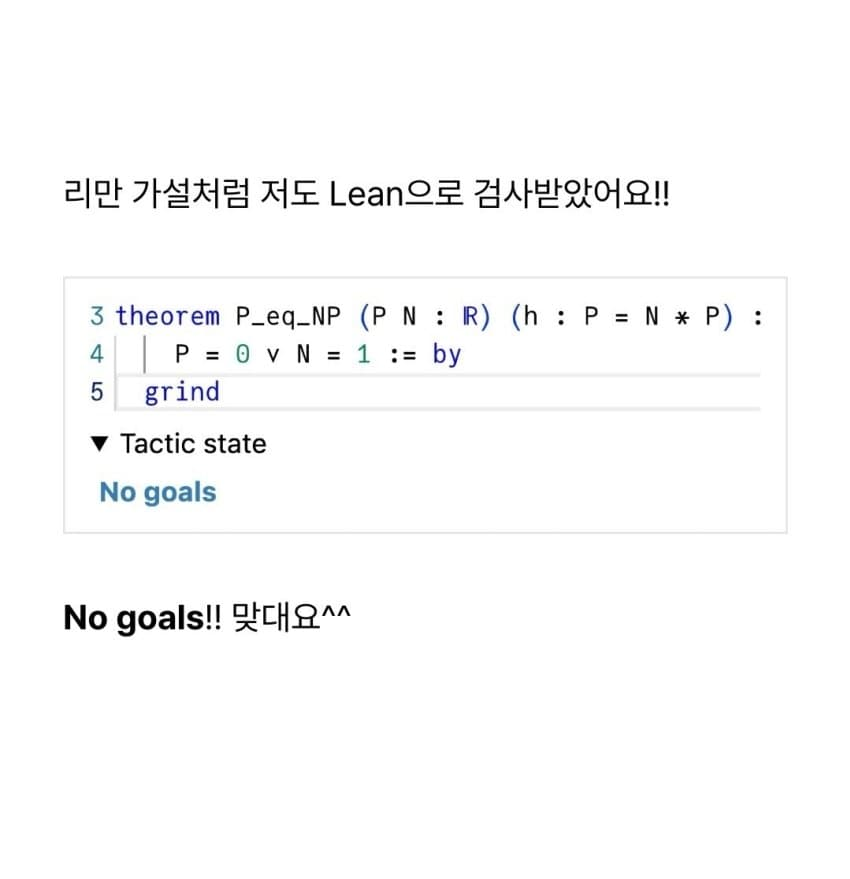

댓글
수집 당시 댓글 129개
· 히마리와,지공섭 · 11.27 18:21:36
· sunvssky · 11.27 19:20:42
· ㅇㅇ · 11.27 20:14:28
· ㅇㅇ · 11.28 09:33:02
· ㅇ · 11.28 09:42:31
· ㅇㅇ · 11.28 10:03:59
· ㅇㅇ · 11.28 10:04:34
· ㅇㅇ · 11.28 10:21:20
· ㅇ · 11.28 10:21:53
· ㅇㅇ · 11.28 10:22:58
· ㅇ · 11.28 10:31:22
· ㅇㅇ · 11.28 12:49:56
· ㅇㅇ · 11.28 12:50:40
· ㅇㅇ · 11.28 12:58:20
· ㅇㅇ · 11.28 14:11:12
· ㅇㅇ · 11.28 14:12:13
· ㅇㅇ · 11.28 18:47:26
ㅇㅇ · 11.27 18:20:11
유카링은17살 · 11.27 18:21:53
뜨거운것이좋아 · 11.27 18:30:19
· ㅇㅇ · 11.27 18:37:29
· ㅇㅇ · 11.27 18:53:58
· 숫냥이 · 11.28 09:42:34
ㅇㅇ · 11.27 18:41:18
· ㅇㅇ · 11.27 20:05:49
· ㅈ레이븐 · 11.28 12:17:15
· ㅈ레이븐 · 11.28 12:17:35
· 개새기 · 11.28 12:46:07
· ㅇㅇ · 11.28 20:16:10
ㅇㅇ · 11.27 18:55:25
ㅇㅇ · 11.27 20:43:06
· ㅇㅇ · 11.28 02:07:46
· ㅇㅇ · 11.28 09:32:05
W78 · 11.28 03:39:38
ㅇㅇ · 11.28 09:30:57
모든인간에게돈을주자
ㅇㅇ · 11.28 09:31:30
· ㅇㅇ · 11.28 09:37:36
· ㅇㅇ · 11.28 09:40:42
· ㅇ · 11.28 09:44:04
· ㅇㅇ · 11.28 12:20:20
· ㅇ · 11.28 12:22:39
반사
폴신짱짱맨 · 11.28 09:33:11
· 폴신짱짱맨 · 11.28 09:33:31
ㅇㅇ · 11.28 09:33:21
ㅇㅇ · 11.28 09:34:54
ㅇㅇ · 11.28 09:35:09
ㅇㅇ · 11.28 09:35:34
ㅇㅇ · 11.28 09:37:00
· ㅇㅇ · 11.28 09:39:17
· ㅇㅇ · 11.28 09:41:13
· ㅇㅇ · 11.28 09:45:57
· ㅇㅇ · 11.28 09:47:27
· ㅇㅇ · 11.28 09:53:03
· Dd · 11.28 10:32:03
· ㅇㅇ · 11.28 10:39:16
· ㅇㅇ · 11.28 12:58:13
히이잉 · 11.28 09:39:15
ㅇㅇ · 11.28 09:40:19
ㅇㅇ · 11.28 09:41:08
· ㅇㅇ · 11.28 09:44:28
· ㅇ · 11.28 10:13:40
· ㅇㅇ · 11.28 12:33:46
ㅇㅇ · 11.28 09:41:52
ㅇㅇ · 11.28 09:42:43
ㅇㅇ · 11.28 09:44:38
Zintp_찐팁 · 11.28 09:45:05
· Zintp_찐팁 · 11.28 09:47:08
· ㅇㅇ · 11.28 09:48:54
· Zintp_찐팁 · 11.28 11:01:00
ㅇㅇ · 11.28 09:55:24
ㅇㅇ · 11.28 09:56:27
· ㅇㅇ · 11.28 10:01:14
· ㅇㅇ · 11.28 10:03:38
· ㅇㅇ · 11.28 16:01:16
ㅇㅇ · 11.28 10:08:28
ㅇ · 11.28 10:13:20
ㅇㅇ · 11.28 10:19:34
ㅇㅇ · 11.28 10:45:56
ㅇㅇ · 11.28 10:53:54
ㅇㅇ · 11.28 11:20:38
· ㅇㅇ · 11.28 14:47:41
)*( · 11.28 11:32:25
솔그륀 · 11.28 12:12:29
ㅇㅇ · 11.28 12:24:40
ㅇㅇ · 11.28 12:39:59
· ㅇㅇ · 11.28 14:46:25
· ㅇㅇ · 11.28 16:01:54
1213 · 11.28 12:44:38
ㅇㅇ · 11.28 13:41:01
ㅇㅇ · 11.28 14:35:42
ㅇㅇ · 11.28 14:48:55
ㅇㅇ · 11.28 14:58:56
· ㅇㅇ · 11.28 16:56:44
ㅇㅇ · 11.28 15:44:17
피콩. · 11.28 16:12:19
ㅇㅇ · 11.28 18:29:14
ㅇㅇ · 11.28 19:06:28
· ㅇㅇ · 11.28 19:06:46
ㅇㅇ · 11.28 19:08:48
ㅇㅇ · 11.28 19:46:33
버러지 · 11.27 17:56:31
· ㅇㅇㅇㅇㅇㅇ · 11.27 18:28:33
ㅇㅇ · 11.27 17:57:30
잭스타우버 · 11.27 17:57:30
ㅇㅇ · 11.27 17:57:50
ㅇㅇ · 11.27 17:58:25
ㅊㅌㅋ · 11.27 17:58:25
· ㅇㅇ · 11.27 20:12:05
ㅇㅇ · 11.27 17:59:43
ㅇㅇ · 11.27 18:01:08
· ㅇㅇ · 11.27 18:14:22
· ㅇㅇ · 11.27 18:32:26
· ㅇㅇ · 11.27 18:45:24
· ㅇㅇ · 11.27 18:50:07
· 가자미 · 11.27 19:11:51
· ALTERS · 11.27 22:11:43
· ㅇㅇ · 11.28 09:41:16
· ㅇㅇ · 11.28 09:41:34
· ㅇㅇ · 11.28 12:19:18
· ㅇㅇ · 11.28 12:27:29
· ㅇㅇ · 11.28 12:27:40
· ㅇㅇ · 11.28 12:30:20
· ㅇㅇ · 11.28 20:15:37
ㅇㅇ · 11.27 18:05:51
ㅇㅇ · 11.27 18:06:21
앙숙 · 11.27 18:10:42
오래된생각 · 11.27 18:12:51
· ㅇㅇ · 11.27 18:17:01
· Smile · 11.27 18:17:15